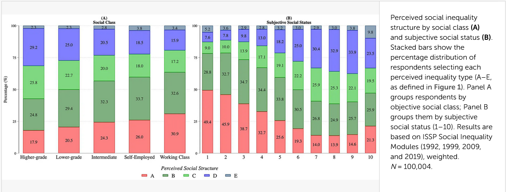
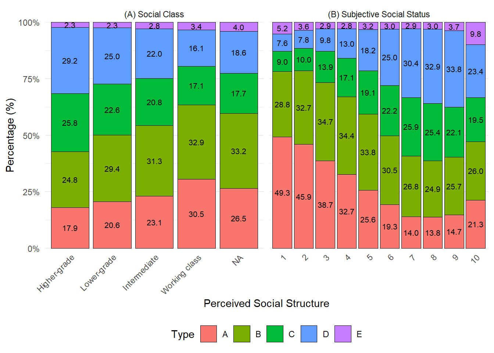

Artículo: Uncovering misperceptions of social inequalities: what matters most, objective class or subjective social status?
Autores/as
Afiliación
Amanda Rojo Ávila
Departamento de Sociología, Universidad de Chile
Amaranta González Herrera
Departamento de Sociología, Universidad de Chile
Elena Yáñez Rodríguez
Departamento de Sociología, Universidad de Chile
Fecha de publicación
4 de mayo de 2026
1 Selección de artículo/reporte
1.1 Artículo seleccionado
Se seleccionó el siguiente artículo para el ejercicio de reproducibilidad: Uncovering misperceptions of social inequalities: what matters most, objective class or subjective social status? E la rtículo corresponde a Melli & Azzollini (2025). El cuál, fue realizado por Giacomo Melli y Leo Azzollini, sociologos italianos. El artículo se publicó en la revista Frontiers in Sociology en el año 2025. Y su DOI es: https://doi.org/10.3389/fsoc.2025.1617413
1.2 Resumen del artículo seleccionado
El artículo se centra en investigar las percepciones de desigualdad social en relación con la clase social objetiva y el estatus social subjetivo. Utilizando datos del International Social Survey Programme (ISSP) que abarcan 35 países y 96 años-entre 1992 y 2019, los autores analizan cómo la percepción de la posición social, tanto la objetiva como la subjetiva, influyen en la percepción de desigualdad. Los resultados del artículo reflejan que tanto la clase social objetiva como el estatus social subjetivo son importantes para comprender las percepciones de desigualdad, pero el estatus social subjetivo tiene un impacto más fuerte en la percepción de desigualdad que la clase social objetiva.
1.3 Justificación de la selección del artículo
El artículo fue seleccionado porque cumple con al menos dos criterios clave para el ejercicio de reproducibilidad: (1) los datos están disponibles públicamente, y (2) la metodología está descrita con suficiente detalle. Aunque el código de análisis no fue proporcionado por los autores, la claridad metodológica permite intentar una reproducción parcial de los resultados. Además, el tema del artículo es relevante para la sociología contemporánea, ya que aborda la percepción de desigualdad social, un tema de gran interés en la investigación sociológica actual. La disponibilidad de datos del ISSP también facilita el acceso a los datos necesarios para intentar reproducir los resultados del estudio.
2 Evaluación de reproducibilidad
Análisis detallado del artículo seleccionado, evaluando los siguientes aspectos:
Disponibilidad de datos: El artículo indica que los datos utilizados provienen del International Social Survey Programme (ISSP), específicamente de los módulos de desigualdad social de los años 1992, 1999, 2009 y 2019. Los datos se encuentran disponibles públicamente en el repositorio GESIS. El equipo accedió a la base de datos sin mayores dificultades, si bien el artículo no entrega un enlace directo a la versión exacta de los datos, estos son accesibles siguiendo los procedimientos estándar del ISSP.
Disponibilidad de código: El artículo no incluye el código de análisis utilizado por los autores. Se contactó a los autores por correo electrónico para solicitar los scripts empleados en la limpieza, procesamiento y generación de resultados y figuras. Hasta la fecha no se ha obtenido respuesta. La ausencia del código limita la posibilidad de una reproducción exacta del estudio, ya que no es posible verificar los pasos analíticos específicos ni las decisiones de recodificación tomadas por los autores
Documentación: El artículo describe los métodos y procedimientos estadísticos de forma general, incluyendo el uso de modelos ordinales generalizados y la inclusión de efectos fijos por país-ola. Sin embargo, la documentación presenta una limitación importante: el artículo no especifica qué variables de la base de datos del ISSP fueron utilizadas para construir los indicadores de “clase social objetiva” y “estatus social subjetivo”. Tampoco se detallan las recodificaciones aplicadas ni los criterios para excluir valores perdidos. Esta falta de información obligó al equipo a tomar decisiones propias sobre la selección y transformación de variables. Por tanto, la documentación es insuficiente para una replicación exacta.
Transparencia: El artículo declara que la investigación contó con financiamiento del Departamento de Sociología e Investigación Social de la Universidad de Trento. Además, los autores señalan no tener conflictos de interés. La revista Frontiers in Sociology sigue estándares de transparencia que exigen declarar estas cuestiones, lo cual fue cumplido por los autores.
3 Análisis reproducible
3.1 Resultado a reproducir
La figura que se busca reproducir corresponde a un gráfico de barras apiladas que muestra la distribución de la percepción de desigualdad social en función de la clase social objetiva y el estatus social subjetivo. El gráfico se divide en dos paneles, uno para cada variable independiente, y muestra la proporción de personas que perciben desigualdad social en cada categoría de clase social objetiva y estatus social subjetivo.

3.2 Proceso de reproducción
Descripción detallada del proceso seguido para reproducir el resultado seleccionado, incluyendo los pasos realizados, las herramientas utilizadas, y cualquier ajuste necesario para lograr la reproducción. Incluye las siguientes sub secciones:
3.2.1 Procesamiento
Incluye el código utilizado para procesar los datos, junto con una explicación de cada paso.
Los datos originales deben ser llamados desde input/data/original, el código de procesamiento se debe incluir en este mismo archivo (reporte-repro.qmd).
Show the code
# Cargar libreriasif (!require("pacman")) install.packages("pacman") # instalar pacman# cargar libreriaspacman::p_load(dplyr, # Manipulacion de datos haven, # importar datos en .dta o .sav car, # recodificar variables sjlabelled, # etiquetado de variables sjmisc, # descriptivos y frecuencias sjPlot, # tablas, plots y descriptivos summarytools, knitr, ggplot2, tidyr # resumen de dataframe )# Cargar datosissp <-read_sav("input/data/proc/data_procesada.sav")
3.2.2 Reproducción
Show the code
# --- PASO 1: RECODIFICACIÓN BASADA EN TUS DATOS ---issp_final <- issp %>%mutate(# Convertimos los números de clase_diagrama a letras A-E para que scale_fill funcioneclase_diagrama_txt =case_when( clase_diagrama ==1~"A", clase_diagrama ==2~"B", clase_diagrama ==3~"C", clase_diagrama ==4~"D", clase_diagrama ==5~"E" ),# Traducimos los números de clase_social_5 a sus etiquetas realesclase_social_txt =case_when( clase_social_5 ==1~"Higher-grade", clase_social_5 ==2~"Lower-grade", clase_social_5 ==3~"Intermediate", clase_social_5 ==4~"Self-employed", clase_social_5 ==5~"Working class"# Excluimos el 6 (NA) para limpiar el gráfico ) ) %>%filter(!is.na(clase_diagrama_txt), !is.na(WEIGHT))# --- PASO 2: PREPARAR PANELES ---# Panel A: Usamos los nombres que acabamos de crearpanel_a <- issp_final %>%filter(!is.na(clase_social_txt)) %>%group_by(clase_social_txt, clase_diagrama_txt) %>%summarise(w =sum(WEIGHT), .groups ='drop') %>%group_by(clase_social_txt) %>%mutate(pct = w /sum(w), panel ="(A) Social Class") %>%rename(eje_x = clase_social_txt)# Panel B: Escala 1-10panel_b <- issp_final %>%filter(!is.na(escala_topbot)) %>%group_by(escala_topbot, clase_diagrama_txt) %>%summarise(w =sum(WEIGHT), .groups ='drop') %>%group_by(escala_topbot) %>%mutate(pct = w /sum(w), panel ="(B) Subjective Social Status") %>%mutate(eje_x =as.character(escala_topbot))df_plot <-bind_rows(panel_a, panel_b) %>%mutate(eje_x =factor(eje_x, levels =c("Higher-grade", "Lower-grade", "Intermediate", "Self-Employed", "Working class", as.character(1:10))))# --- PASO 3: EL GRÁFICO FINAL ---colores_issp <-c("A"="#F8766D", "B"="#7CAE00", "C"="#00BA38", "D"="#619CFF", "E"="#C77CFF")ggplot(df_plot, aes(x = eje_x, y = pct, fill = clase_diagrama_txt)) +geom_col(position =position_stack(reverse =TRUE), color ="black", linewidth =0.2) +geom_text(aes(label =sprintf("%.1f", pct *100)), position =position_stack(reverse =TRUE, vjust =0.5), size =2.8) +facet_wrap(~panel, scales ="free_x") +scale_fill_manual(values = colores_issp) +scale_y_continuous(labels = scales::percent_format(), expand =c(0,0)) +labs(x ="Perceived Social Structure", y ="Percentage (%)", fill ="Type") +theme_minimal() +theme(legend.position ="bottom",axis.text.x =element_text(angle =45, hjust =1))

4 Conclusiones
El nivel de reproducibilidad del artículo se evalúa como bajo a medio. Si bien los datos del ISSP están disponibles públicamente, no se dispone del código de análisis ni de una especificación completa de las variables utilizadas en el estudio. Esta falta de información impidió que la reproducción fuera exacta.
En el intento de reproducir la figura seleccionada, se enfrentaron dos dificultades principales. Primero, el artículo no explicita con claridad qué variables de la base de datos del ISSP fueron utilizadas para construir las categorías de clase social objetiva y estatus social subjetivo. Segundo, al no contar con la sintaxis original de los autores, los resultados obtenidos por el equipo difieren de los reportados en el artículo. Aunque se logró generar un gráfico similar, las diferencias en la categorización de las variables y en el proceso de análisis llevaron a resultados que no coinciden exactamente con los del artículo original.
En conclusión, el artículo es parcialmente reproducible: los datos existen y son accesibles, pero la falta de código y de documentación detallada sobre el tratamiento de variables limita severamente la posibilidad de replicar los hallazgos sin depender de información no publicada por los autores.
5 Recomendaciones
Para mejorar la reproducibilidad del artículo y facilitar futuros ejercicios de replicación, se sugieren las siguientes acciones:
Publicar el código de análisis en un repositorio público (GitHub, Zenodo u OSF), incluyendo todos los scripts utilizados para la limpieza, procesamiento y generación de figuras y tablas.
Documentar explícitamente las variables utilizadas, indicando los nombres originales en la base de datos del ISSP y las transformaciones aplicadas (recodificaciones, valores perdidos excluidos, etc.).
6 Referencias
Melli, G., & Azzollini, L. (2025). Uncovering Misperceptions of Social Inequalities: What Matters Most, Objective Class or Subjective Social Status? Frontiers in Sociology, 10. https://doi.org/10.3389/fsoc.2025.1617413
7 Apéndice
7.1 Material suplementario
Se incluye un archivo adicional con el código de procesamiento y análisis realizado por el equipo para intentar reproducir los resultados del artículo. Este código se encuentra en el archivo processing/prod_prep.Rmd dentro del repositorio del proyecto.
7.2 Código
No se cuenta con código original de los autores, por lo que no es posible incluirlo en esta sección.